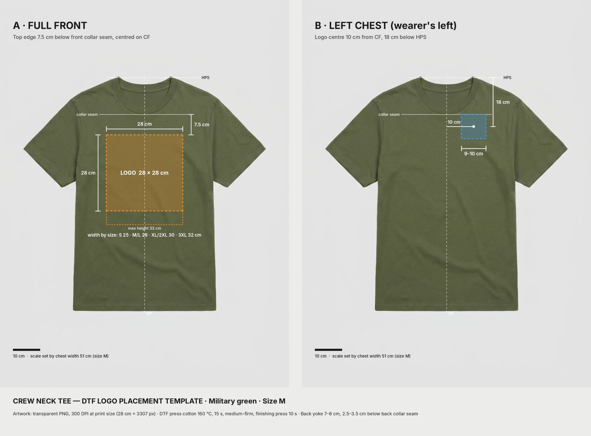
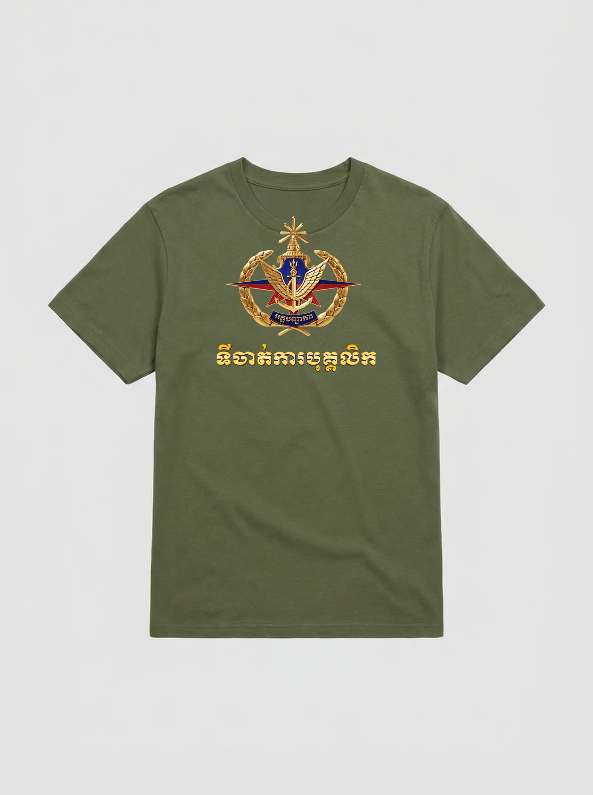
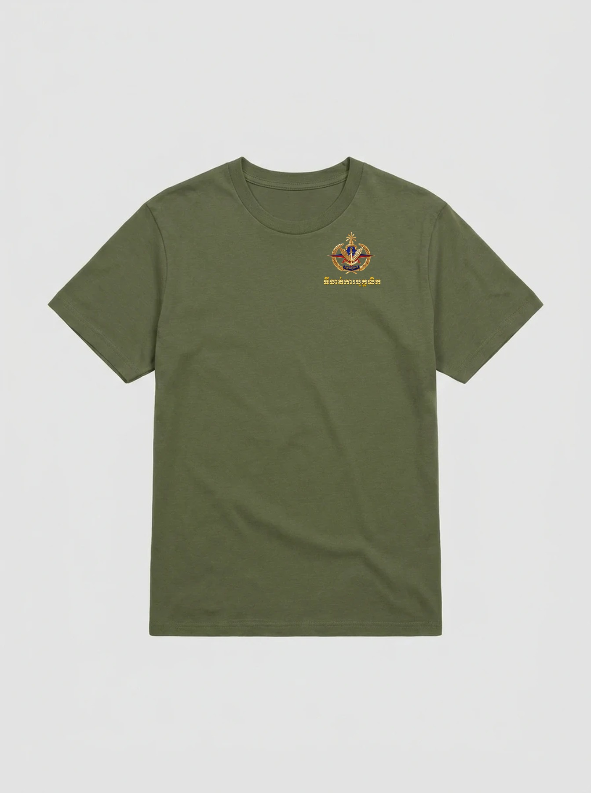

| Document number | |
| Revision / date | Rev 0 · 6 October 2026 |
| Insignia-use approval reference | |
| Approving authority | |
| Order / purchase reference | |
| Authorized vendor | |
| Authorized quantity (all sizes) |
This document sets out how the official Personnel Department crew-neck T-shirt must be produced: garment, artwork, crest placement, dimensions, print process, quality control, insignia etiquette and disposal of rejects. It applies to every vendor, printer and person who handles the artwork or produces the garment.
| Term | Meaning |
|---|---|
| HPS (high point shoulder) | The point where the shoulder seam meets the collar rib, on the wearer's left side. |
| CF (centre front) | The vertical centre line of the garment front, found by folding the garment in half lengthwise, sleeve to sleeve. |
| Front collar seam | The stitch line where the collar rib joins the front body at CF. |
| Wearer's left | The left side of the person wearing the shirt. On a garment laid face-up, this is the right side as you look at it. |
| Print width | The horizontal distance between the outermost printed points of the artwork (the ends of the Khmer text line). |
| PPS | Pre-production sample: a finished garment made with the bulk materials and process, submitted for written approval before bulk production. |
How to measure: lay the garment flat, face-up, smooth and unstretched, on a hard surface. Measure with a steel rule or a calibrated tape, in centimetres. Find CF by folding, never by eye.
| Item | Requirement |
|---|---|
| Style | Short-sleeve crew-neck T-shirt, regular fit, rib collar, side-seamed or tubular body |
| Fabric | 100% cotton single jersey, combed or ring-spun, pre-shrunk; 180–200 g/m² † |
| Colour | Military green, matched to the approved physical colour standard. Digital reference ≈ #63684B (sampled from the reference image; for screens only). Textile code (e.g. Pantone TCX): |
| Size range | S, M, L, XL, 2XL, 3XL. Reference size M: chest width 51 cm, measured flat 2.5 cm below the armhole |
| Shade consistency | All garments in one order must come from the same dye lot wherever possible. Mixed lots must be packed separately and declared. |
| Labels | Size and care label inside the neck or side seam only. No vendor or commercial branding on the outside of the garment. |
Production must use only the master files below, exactly as supplied. They are transparent PNGs at 300 dpi, sRGB, with hard edges: every pixel is fully opaque or fully transparent, with no soft shadows, so the white underbase prints clean.
| File | Use | Pixels (W × H) | Print size (W × H) |
|---|---|---|---|
| front_S_25cm.png | Full front, size S | 2953 × 2888 | 25.0 × 24.5 cm |
| front_M-L_28cm.png | Full front, sizes M and L | 3307 × 3234 | 28.0 × 27.4 cm |
| front_XL-2XL_30cm.png | Full front, sizes XL and 2XL | 3543 × 3464 | 30.0 × 29.3 cm |
| front_3XL_32cm.png | Full front, size 3XL | 3780 × 3696 | 32.0 × 31.3 cm |
| leftchest_10cm.png | Left chest, all sizes | 1181 × 1155 | 10.0 × 9.8 cm |
Approved wording. The Khmer text must match the master file exactly: banner អគ្គបញ្ជាការ; title line ទីចាត់ការបុគ្គលិក.
These values were sampled from the master artwork. Use them to check colour on screen and in the RIP. The approved PPS under daylight (D65) is the final colour standard.
| Element | Reference (sRGB) | Notes |
|---|---|---|
| Gold, highlight | #FBE492 | Metallic gold is printed as a CMYK gradient, not foil. Keep the gradient; do not flatten it to one gold. |
| Gold, mid-tone | #EFCB61 / #D5AC5E | |
| Gold, shade | #A46C2F | |
| Royal navy (shield, banner, text outline) | #131A63 | Must stay distinctly blue, not black |
| Red (star) | #A31917 | Must not shift towards orange or brown |
| Khmer title fill | #FDDB6A | Bright yellow-gold. Must be clearly legible on military green. |

| Position | Artwork | Vertical reference | Horizontal reference |
|---|---|---|---|
| A · Full front | front_[size].png | Top edge of the artwork 7.5 cm below the front collar seam | Centred on CF |
| B · Left chest (wearer's left) | leftchest_10cm.png | Centre of the artwork 18 cm below HPS | Centre of the artwork 10 cm from CF, towards the wearer's left |
| C · Back yoke | Reserved. Width 7–8 cm, top edge 2.5–3.5 cm below the back collar seam. Not authorized until separate artwork is approved and issued. | ||
A and B are alternatives: one garment carries either A or B, never both, unless the purchase order states otherwise. Purchase order position(s):
| Check | Tolerance |
|---|---|
| Vertical position (A: top edge; B: centre) | ± 0.5 cm |
| Horizontal position (A: centring on CF; B: 10 cm offset) | ± 0.3 cm |
| Tilt: the Khmer text baseline must be parallel to the hem | ≤ 1° |
| Print width compared with the specified width | ± 2 % |


| Garment size | Position A file | A print size (W × H) | A top edge below collar seam | B print size | B centre (from CF / below HPS) |
|---|---|---|---|---|---|
| S | front_S_25cm | 25.0 × 24.5 cm | 7.5 cm | 10.0 × 9.8 cm | 10 / 18 cm |
| M | front_M-L_28cm | 28.0 × 27.4 cm | 7.5 cm | 10.0 × 9.8 cm | 10 / 18 cm |
| L | front_M-L_28cm | 28.0 × 27.4 cm | 7.5 cm | 10.0 × 9.8 cm | 10 / 18 cm |
| XL | front_XL-2XL_30cm | 30.0 × 29.3 cm | 7.5 cm | 10.0 × 9.8 cm | 10 / 18 cm |
| 2XL | front_XL-2XL_30cm | 30.0 × 29.3 cm | 7.5 cm | 10.0 × 9.8 cm | 10 / 18 cm |
| 3XL | front_3XL_32cm | 32.0 × 31.3 cm | 7.5 cm | 10.0 × 9.8 cm | 10 / 18 cm |
The crest represents the institution and must be treated with respect at every stage, from file handling to finished garment. Everyone involved in production must follow these rules.
The dashed line marks the outer edge of the artwork. The clear zone around it is at least 10% of the print width on every side. Nothing may be placed inside it.
Use any of the applications below to check the files, lay them out or hand them to the RIP. In every application the output must be a transparent PNG at the pixel size in Section 4, sRGB, with nothing added.
| Application | Canvas / document setup | Placing and exporting |
|---|---|---|
| Adobe Photoshop | File › New: width and height in cm from Section 4; Resolution 300 px/inch; RGB, 8-bit; Background Contents: Transparent | File › Place Embedded, then confirm 100% scale (no resampling). File › Export › Export As › PNG: Transparency on, "Smaller file (8-bit)" off, scale 100%. Check Image › Image Size shows the Section 4 pixel size. |
| Adobe Illustrator | Artboard in cm at the Section 4 print size; RGB document | File › Place (linked). In the Links panel, effective PPI must read 300. File › Export › Export As › PNG: Resolution 300 ppi, Background Transparent, Anti-aliasing None (keeps the hard edges). |
| Adobe Express | Custom size in pixels (e.g. 3307 × 3234 px for M/L) | Upload the PNG and size it to fill the canvas exactly. Download › PNG with Transparent background. Check the downloaded file's pixel size. |
| Figma | Frame at the Section 4 pixel size; remove the frame fill so it is transparent | Place the image at W/H exactly equal to the frame, with no crop. Export › PNG › 1x. Figma reduces images over 4096 px, but all master files are under that. Figma does not save DPI, so the RIP operator must set the print width from Section 7. |
| Canva | Create design › Custom size in px (not cm), Section 4 pixel size | Upload, then set the image to fill the page with no crop. Share › Download › PNG, size ×1, tick Transparent background. Do not apply Canva filters or "Enhance". Check the downloaded file's pixel size. |
| Sketch | Artboard at the Section 4 pixel size; untick Background Color | Insert the image at exact W/H. Export › PNG › 1x. Like Figma, the RIP operator sets the print width. |
| Step | Temperature | Time | Pressure / notes |
|---|---|---|---|
| Pre-press garment (removes moisture and wrinkles) | 160 °C | 3–5 s † | Light |
| Transfer press (cotton) | 160 °C | 15 s | Medium-firm; peel hot or cold according to the film supplier's instructions |
| Finishing press | 160 °C | 10 s | Medium-firm, with a PTFE (Teflon) sheet or parchment over the print |
Align with a T-square or laser guide using the measurements in Sections 6 and 7. Never align by eye.
Wash inside out at a maximum of 30 °C · No bleach · Do not tumble dry on high heat · Do not iron directly on the print · Do not dry-clean.
| Test | Method | Pass criterion |
|---|---|---|
| Placement | Measure as in Section 2 | Within the Section 6 tolerances |
| Colour | Side by side with the approved PPS under daylight (D65) | No visible difference in the gold, navy or red |
| Edge quality | Inspect with a 10× loupe | No white halo, no fuzzy edges, all fine lines intact |
| Stretch | Stretch the print area by hand to about 1.5× its width, hold, release | No cracking, no lifting |
| Wash durability | 5 cycles at 30 °C, inside out, line dry | No peeling, cracking or noticeable fading |
| Adhesion | Try to lift the print edge with a fingernail | Edges stay fully bonded |
Inspect each lot to ISO 2859-1, general inspection level II, using these acceptance quality limits †: Critical 0 · Major 2.5 · Minor 4.0.
| Class | Defects |
|---|---|
| CRITICAL | Altered, distorted or incomplete crest; misspelled or re-typed Khmer text; crest inverted, mirrored or tilted; crest printed at an unapproved position; wrong garment colour; any foreign mark on the garment. Zero accepted. Garments with a critical defect must be destroyed (Section 13). |
| MAJOR | Placement outside tolerance; visible colour shift from the PPS; white halo or underbase showing; peeling, cracking or bubbles; ghosting or double image; smudges or stains in the print area; garment hole or seam defect. |
| MINOR | Slight gloss variation; loose threads away from the print; small packing or labelling faults. |
This specification becomes mandatory for production once it is signed below.
| Role | Name and rank | Signature | Date |
|---|---|---|---|
| Prepared by | |||
| Checked by | |||
| Approved by |
We have received and read this specification and the master artwork files. We agree to produce, inspect, pack, secure and dispose of all materials exactly as specified, and to request written approval before any deviation.
| Company | Authorized representative | Signature and stamp | Date |
|---|---|---|---|
| Rev | Date | Change | Approved by |
|---|---|---|---|
| 0 | 6 Oct 2026 | First issue for approval | |